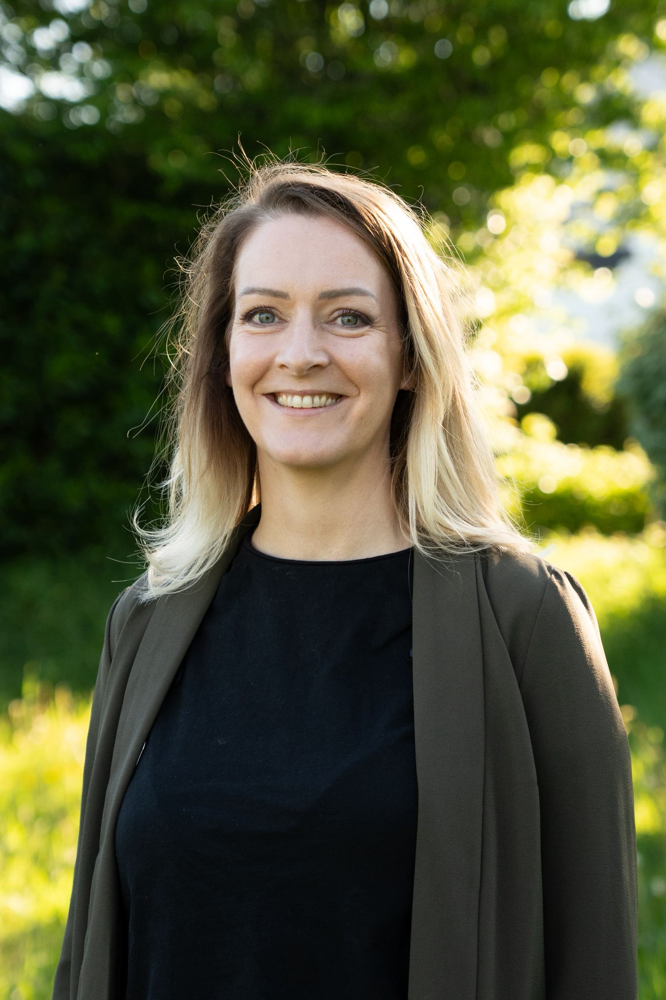

Je m'appelle Anne-Cécile Le Dain
Je rends l'IA générative utile aux entreprises qui n'ont pas de service informatique dédié. KléIA Solutions est née d'un constat simple : les PME et TPE entendent parler d'IA partout, mais rarement de façon qui leur soit vraiment applicable.

Mon parcours
15 ans cheffe d'entreprise
D'abord à la tête d'un food truck pendant 3 ans, puis de mon propre restaurant pendant 12 ans. Gérer une équipe, un budget et une clientèle au quotidien m'a appris ce que veut dire diriger une petite structure avec ses vraies contraintes, pas en théorie.
Puis le numérique et l'IA
J'ai repris mes études avec un Mastère Stratégie Digitale, avant de passer trois ans comme responsable communication-marketing et IA dans une PME bretonne. J'y ai introduit des outils d'IA pour de vraies équipes : des assistants pour les commerciaux, un système de production de contenus, des automatisations qui tournent encore. Ma compréhension de l'IA, je l'ai construite en l'utilisant concrètement, projet après projet, plutôt qu'en la théorisant.
Ce que ça change pour vous
Je ne viens pas du monde du développement informatique. C'est précisément ce qui me permet de parler aux dirigeants et à leurs équipes sans jargon : je suis passée par les mêmes étapes d'apprentissage, avec les mêmes questions et parfois les mêmes blocages, et j'ai été à leur place en tant que cheffe d'entreprise.
Basée à Carhaix, en Centre-Bretagne, j'interviens sur le terrain dans toute la région pour les formations en présentiel. Pour les audits, l'installation d'outils et le suivi à distance, je travaille avec des entreprises partout en France.
Pourquoi KléIA Solutions
Le nom vient de l'idée d'une clé : l'IA générative n'est pas une fin en soi, c'est un outil qui ouvre des portes, à condition de savoir laquelle utiliser et comment. Mon rôle n'est pas de vous convaincre que l'IA va tout changer du jour au lendemain, mais de vous aider à identifier les deux ou trois usages qui, chez vous, feraient réellement une différence.
Ma façon de travailler
- Je pars toujours de votre activité réelle, jamais d'une liste de cas d'usage génériques
- Je refuse les fausses promesses : l'IA ne remplace pas le jugement humain, elle lui rend du temps
- Je m'assure que chaque usage proposé respecte le cadre RGPD et la réglementation en vigueur
- Je forme aussi bien les dirigeants qui décident que les équipes qui utilisent l'outil au quotidien
- Je reste disponible après une formation ou un audit, la mise en pratique se fait sur la durée
Pourquoi ça compte pour les petites structures
Les grandes entreprises ont des équipes dédiées à l'innovation et des budgets pour expérimenter. Les PME et les TPE n'ont ni l'un ni l'autre, et n'ont pas droit à l'erreur sur le temps qu'elles investissent. C'est pour cette raison que je conçois chaque accompagnement pour produire un résultat visible rapidement, plutôt qu'un projet qui s'étale sur des mois sans qu'on en voie la fin.
Formations et certifications
Je ne forme pas à des outils que je connais de loin. Chacune des compétences que j'enseigne, je l'ai d'abord construite moi-même, par la pratique.
- Prompt engineering : formation complète sur les techniques de prompt (chaîne de pensée, few-shot, structuration)
- n8n et automatisations : formation approfondie sur la plateforme n8n, appliquée à des projets réels en production
- HEC Create : programme d'entrepreneuriat innovant, sélection 2025-2026
- Claude 101 : certification officielle Anthropic (juin 2026)
Envie de voir mes projets IA en détail ?
Automatisations, applications, sites : retrouvez mes réalisations sur mon portfolio.